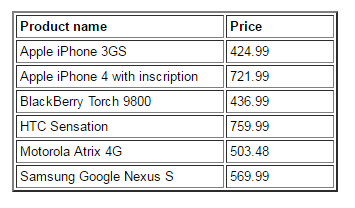

Using transformations in macro expressions
You can apply transformations of the Text/XML and HTML type to pages and other objects retrieved via macro expressions. Transformations in macro expressions allow you to display dynamically loaded data inside text and HTML content, where you cannot add listing web parts or controls. Typical examples include:
Email templates that define the content of system emails
You can also use transformations in all locations where macro resolving is supported.
To apply transformations to data inside macros, call the following macro method:
ApplyTransformation(String transformationName)The parameter must match the full name of the transformation that you wish to use. An overload with three parameters is also possible, which allows you to place additional transformations before and after the displayed data:
ApplyTransformation(String transformationName, String contentBeforeTransformationName, String contentAfterTransformationName)You can call the method for collections of objects that implement the IEnumerable interface, or for single instances of an object. When the system resolves such macro expressions, they return the objects of the given collection, formatted into the output code defined by the transformation.
Security considerations
When you save a macro expression, the system automatically adds a security signature. The signature is used to check access permissions for the data collections loaded by the expression. Macro security depends on the user who entered and saved the macro expression, not on the user viewing the resolved result.
As a result, the system does not resolve macro expressions if their author does not have permissions to access the requested data.
See also: Working with macro signatures
Examples - transformations in macro expressions
Preparing the environment
This scenario is intended primarily for demonstration purposes. The recommended way to display data on standard website pages is using listing web parts or controls, which provide support for transformations.
Preparing the environment
Open the Pages application and select the root of the website.
Click New (
 ).
).Select the Page (menu item) page type.
Type Macros as the Page name and select the Create a blank page template option.
Click Save to create the page.
Switch to the Design tab of the new page and add an Editable text web part.
You can now insert the macro expressions described below into the editable region on the page's Page tab. The system resolves the macros on the live versions of the page.
Displaying the current user
First you need to create the transformation:
Open the Page types application.
Edit (
 ) the Root page type and open the Transformations tab.
) the Root page type and open the Transformations tab.Click New transformation and enter the following data:
Transformation name: UsersInText
Transformation type: Text / XML
Code:
<divclass="member"><a href="{% GetMemberProfileUrl(UserName) %}">{% GetUserAvatarImage(UserAvatarID, UserID, FullName,52,0,0) %}</a><divclass="memberInfo"><p><h3><a href="{% GetMemberProfileUrl(UserName) %}">{% FullName %}</a></h3></p></div></div>
Click Save.
Your transformation is now registered in the system. You can apply the transformation to user objects inside macro expressions:
Open the Pages application.
Edit the previously created Macros page on the Page tab.
Enter the following expression into the editable region.
{% CurrentUser.ApplyTransformation("CMS.Root.UsersInText") %}Click Save.
The macro expression above retrieves an object containing the data of the user currently viewing the page, which is then formatted according to the specified transformation. You can view the page on the live website to see how the macro is resolved.
Viewing the transformed content - the current user
Displaying pages from the content tree
First you need to create the transformation.
Open the Page types application.
Edit (
) the Root page type and open the Transformations tab.Click New transformation and enter the following data:
Transformation name: NewsInText
Transformation type: Text / XML
Code:
<divclass="description"><aclass="header bold"href="{% GetDocumentUrl() %}">{% NewsTitle %}</a><p>{% NewsSummary %}<br /></p></div>
Click Save.
Your transformation is now registered in the system. You can apply the transformation to collections of news pages inside macro expressions:
Open the Pages application.
Edit the previously created Macros page on the Page tab.
Enter the following expression into the editable region.
{% Documents["/News"].Children.WithAllData.ApplyTransformation("CMS.Root.NewsInText") %}In the expression above, the page under the /News path is selected from the Pages collection. Through its Children property, the system then accesses a collection containing all child pages. Using the WithAllData property ensures that the retrieved page objects include their coupled data, i.e. the specific fields defined for the given page type.
Click Save.
If you view the page on the live website, you can see how the macro is resolved.
Viewing the transformed content - pages from the content tree
Retrieving and displaying site objects
In this example, you first need to create three separate Text / XML transformations.
Open the Page types application.
Edit (
) the Root page type and open the Transformations tab.Click New transformation and enter the following data:
Transformation name: ProductTableHeader
Transformation type: Text / XML
Code:
<table border="2"cellpadding="3"><tr><td width="200"><b>Product name</b></td><td width="100"><b>Price</b></td></tr>
Click Save.
Reload the page type's Transformations tab.
Click New transformation and enter data for the second transformation:
Transformation name: ProductTableRow
Transformation type: Text / XML
Code:
<tr><td>{% SKUName %}</td><td>{% GetSKUPrice(SKUID) %}</td></tr>
Click Save.
Reload the page type's Transformations tab again.
Click New transformation and enter data for the third transformation:
Transformation name: ProductTableFooter
Transformation type: Text / XML
Code:
</table>
Click Save.
All three transformations are now registered in the system. You can apply the transformation to collections of SKU objects (products) inside macro expressions:
Open the Pages application.
Edit the previously created Macros page on the Page tab.
Enter the following expression into the editable region.
{% SiteObjects.SKUs.Where("SKUDepartmentID = 2").OrderBy("SKUName").ApplyTransformation ("CMS.Root.ProductTableRow","CMS.Root.ProductTableHeader","CMS.Root.ProductTableFooter") %}The system retrieves product objects (SKUs) from the SiteObjects collection. The Where macro method is then used to filter the collection according to a standard SQL condition specified as the parameter. In this case, only products from the Smartphones department are loaded. The OrderBy method sorts the objects according to the values in their SKUName field.
You can apply the Where and OrderBy methods to all types of collections, including pages.
Click Save.
The ApplyTransformation method is called with additional parameters to add the header and footer transformations before and after the main data items. This ensures that the transformations are combined to achieve the desired result:

Viewing the transformed content - site objects